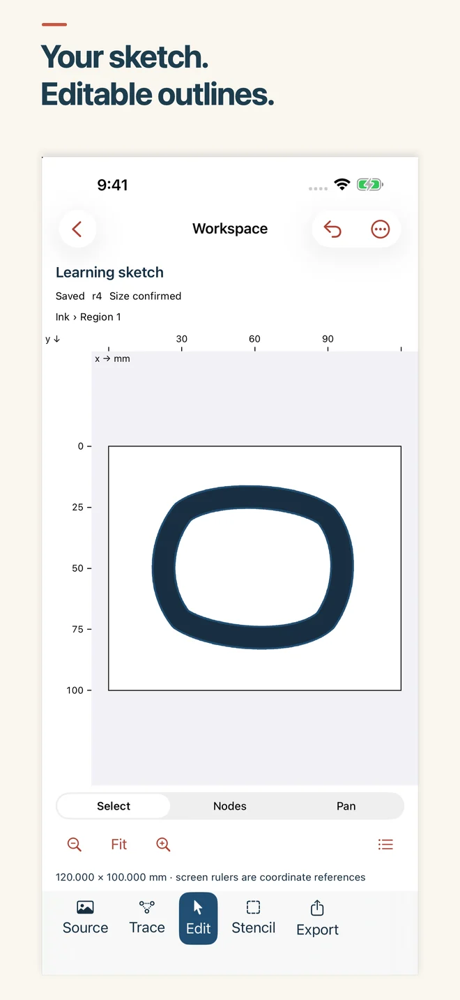
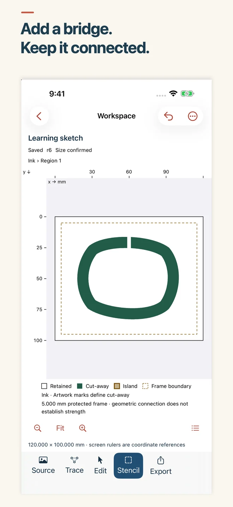
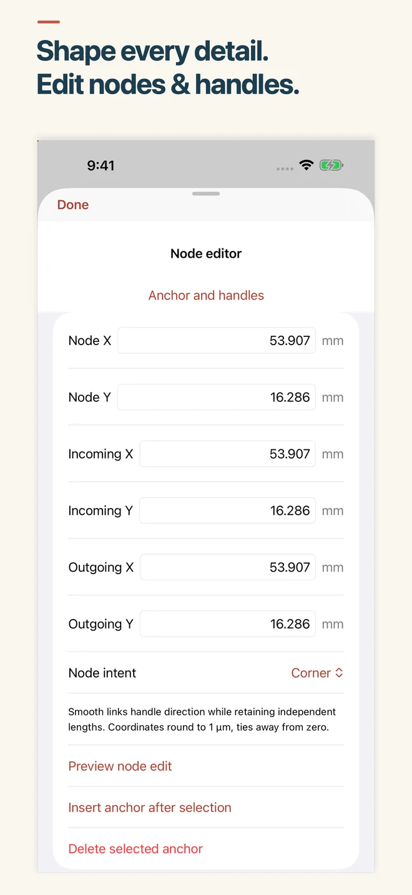

MubarakLab
InkCut — Sketch to Stencil
Turn a sketch into something you can make.
Your artwork, ready to refine
Bring in a photo or scan, capture a sketch, or draw with your finger. Clean the image, trace filled regions on your device and refine editable vector outlines on your iPhone.
Available on the App Store for iPhone, iOS 26 and later. Free to download. InkCut Pro is an optional one-time in-app purchase, and a free 7-Day Pro Trial lets you test it first. Earlier buyers keep Pro. No account, subscription, advertising or external AI service.
From first sketch to physical size
- See the source. Review cleanup and trace settings before accepting new vector work.
- Refine the outlines. Edit anchors, handles, shapes and layers. Preserve the project for another session.
- Review stencil islands. Add retained-material bridges and recheck connectivity. Test your design with your chosen material.
- Choose your output. Generate physically sized SVG, printable PDF or a PNG preview. Keep editable backups separately.
Sketch, refine, connect



Choose physically sized SVG, printable PDF or a PNG preview when your design is ready. Save an editable .inkcut backup to keep working later.
Keep the editable original
Projects and normalized source artwork are stored locally. You choose where exports and editable .inkcut backups go. Files providers, receiving apps and device backups use their own services.
Tracing follows region boundaries; it does not create centerline tool paths or editable lettering. Check imported size in your destination software. Check your cutting software and material requirements before making a piece.
At a glance
- Price
- Free to download. InkCut Pro is an optional one-time in-app purchase; a free 7-Day Pro Trial is available.
- Requires
- iPhone with iOS 26 or later
- Language
- English
- Current version
- 1.2.1 (21 October 2026)
- App Privacy label
- Data Not Collected
- Developer
- Mubarak Almahmeed (MubarakLab), Bahrain
- App Store
- InkCut: Image to SVG & Stencil (ID 6819163438)
Questions before your first cut
What does InkCut do?
InkCut vectorizes a photo, a scan or a finger sketch into a clean SVG of filled outlines, sized in real millimeters or inches. You can tune the trace, edit any node, check that a stencil holds together as one piece and export the result, all on your iPhone.
Is InkCut free?
Yes, it is free to download. Capture, cleanup, tracing in up to two colors, path editing and stencil bridges are all included, and so are your first three SVG or PDF exports. PNG previews carry a small InkCut mark. InkCut Pro is a single one-time purchase, not a subscription. It removes the export limit and the preview mark, and opens color separation beyond two layers (up to six).
Can I try InkCut Pro before buying it?
Yes. The 7-Day Pro Trial is a free in-app item: it never charges, does not renew and cannot be restarted. When it ends, Pro features lock again unless you buy InkCut Pro, and your projects stay editable.
I bought InkCut when it was a paid download. Do I have to pay again?
No. If you bought InkCut before version 1.2, InkCut Pro is already unlocked for you. After a reinstall or on another device, open Settings, then InkCut Pro, then Restore Purchases while signed in with the same Apple Account.
Which files can InkCut export?
An SVG made of plain filled paths with its physical width and height written in (all visible layers together, or one SVG per layer). A PDF at actual size, tiled across A4 or Letter with assembly marks and a 100 mm calibration bar, or fitted to one page. A PNG preview. And a portable .inkcut project backup that stays fully editable.
Will the SVG open in my cutting machine's software?
InkCut writes standard SVG with its physical size included, and most design and cutting software can import SVG. Import settings differ between programs, so check the size after importing and cut a small test piece first. InkCut makes files only; it does not connect to or drive any cutting machine.
Can InkCut make single-line (centerline) paths or editable text?
No. InkCut traces the boundaries of filled shapes. It does not create single-line centerline paths for pens or engraving, and it does not rebuild editable lettering.
What is a stencil bridge?
A thin strip of material that keeps a loose island, such as the center of an O, attached to the rest of the stencil. InkCut finds loose islands, adds bridges at the width you choose and rechecks every connection. A connected stencil is a geometry check, not a promise about the strength of your material.
Which pictures can I start from?
A photo of a paper drawing, a saved JPEG, PNG or HEIC picture from Photos or Files, or a sketch drawn with your finger. You can crop, straighten, correct perspective, adjust threshold and contrast, clear specks and erase background areas before tracing. Since version 1.2.1, camera photos trace with automatic photo settings.
Do I need an account or an internet connection?
No account is needed, and tracing, editing and exporting run on your iPhone. Purchases go through Apple.
Is this InkCut related to other software or apps with a similar name?
No. This page describes the iPhone app InkCut: Image to SVG & Stencil by Mubarak Almahmeed (App Store ID 6819163438). It is not affiliated with other software or apps that use a similar name.
Where InkCut fits
InkCut does one job: picture in, sized cut file out, on a phone. Here is how that compares with the usual alternatives. Pick the tool that matches your work.
- Desktop vector editors with an image-trace feature
- They offer far more drawing and layout tools, but you need a computer. InkCut stays on your iPhone and adds a physical size and a stencil connectivity check to the trace.
- Online image-to-SVG converters
- They are quick for a one-off file, and many process your picture on a server. InkCut traces on your device, lets you edit the nodes afterwards and writes the real-world size into the file.
- The design app that comes with a cutting machine
- It is usually the place to arrange and send a job to that machine. InkCut does not drive a machine. It prepares an SVG or PDF that you then import there.
- Centerline or single-line tracing tools
- If you need one-stroke paths for a pen plotter or engraving, use one of these. InkCut traces filled regions only.
Categories are described in general terms; features of other products vary, so check them for yourself.
What changed
- 1.2.1 · 21 October 2026
- Fixes for your first cut file: camera photos trace in seconds with automatic photo settings; pictures keep their shape (a round logo stays round); new traces come out as clean outlines with much smaller SVG files; size is set inside SVG export; shared files use your project's name; Settings → See InkCut Pro opens again; simpler first steps.
- 1.2 · 13 October 2026
- InkCut became free to download, with InkCut Pro as an optional one-time purchase and a free 7-Day Pro Trial. Earlier buyers keep Pro. A guided first project traces a sample drawing.
- 1.1 · October 2026
- Three-pane layout on iPhone Duo: original drawing, vector canvas and tool inspector side by side.
- 1.0 · 6 October 2026
- First release.
What stays on your iPhone
- App Store privacy label: Data Not Collected.
- No account, no advertising and no analytics SDK. The app has no network code of its own.
- Projects and source artwork are stored on your device. You choose where exports and .inkcut backups go; Files providers, receiving apps and device backups follow their own policies.
- Apple processes in-app purchases. InkCut checks your Pro status on the device with StoreKit and never receives payment details.